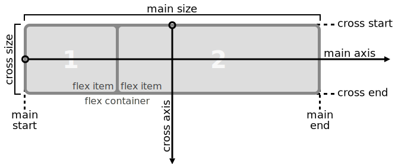

Specificity
If you have two (or more) conflicting CSS rules that point to the same element, there are some basic rules that a browser follows to determine which one is most specific and therefore wins out
More Specific = Greater Precedence
If the selectors are the same then the last one will always take precedence
p { color: red; }
p { color: magenta; }
Specificity conflicts
<div class="box">
<p>My paragraph</p>
</div>
.box p { color: red; }
p { color: magenta; }
?
Calculating Specificity

Calculating Specificity
The actual specificity of a group of nested selectors takes some calculating:
- If the element has inline styling, that automatically1 wins (1,0,0,0 points)
- For each ID value, apply 0,1,0,0 points
- For each class value (or pseudo-class or attribute selector), apply 0,0,1,0 points
- For each element reference, apply 0,0,0,1 point
Specificity Quiz
What color will have the paragraph?
div#main p.bar { color: red; } .container p#foo.boo { color: green; } #main.container p { color: blue; } <div id="main" class="container"> <p id="foo" class="bar boo">Something clever goes here...</p> </div>
Specificity Quiz
The podium order: green, red, blue
2. (0,1,1,2) div#main p.bar { color: red; } 1. (0,1,2,1) .container p#foo.boo { color: green; } 3. (0,1,1,1) #main.container p { color: blue; } <div id="main" class="container"> <p id="foo" class="bar boo">Something clever goes here...</p> </div>
At-rules
An at-rule is an instruction or directive to the CSS parser. It starts with an at-keyword: an @ character followed by an identifier
At-rule: @import
The @import at-rule allows us to import one style sheet into another. All @import at-rules must appear before any rules
@import url(morestyles.css);
At-rule: @media
The @media at-rule lets us target rules to the media types we specify
@media print { body { font-size: 10px; font-family: times, serif; } .navigation { display: none; } }
At-rule: @font-face
The @font-face at-rule allows us to specify custom fonts
@font-face { font-family: "font of all knowledge"; src: url(fontofallknowledge.woff); }
At-rule: others
@keyframes, @charset, @namespace
Advanced selectors
Universal selector
The universal selector matches any element type
* { margin: 0; padding: 0; } #contact * { display: block; }
Advanced selectors
Child selector
The child selector is represented by the sign ">". It allows you to target elements that are direct children of a particular element
.box > h2 { font-size: 20px; }
Advanced selectors
Adjacent selector
A plus sign ("+") is used to target an adjacent sibling of an element, essentially, something immediately following something
h1 + p { font-weight: bold; }
Advanced selectors
Play! Selectors
Box Model
The CSS box model is essentially a box that wraps around HTML elements, and it consists of: margins, borders, padding, and the actual content

Box Model
Explanation of the parts:
- Margin - Clears an area around the border. The margin does not have a background color, it is completely transparent
- Border - A border that goes around the padding and content. The border is inherited from the color property of the box
- Padding - Clears an area around the content. The padding is affected by the background color of the box
- Content - The content of the box, where text and images appear
Box Model - dimensions
When you set the width and height properties of an element with CSS, you just set the width and height of the content area. To calculate the full size of an element, you must also add the padding, borders and margins.
Box Model
Alter the default CSS box model
-moz-box-sizing: border-box; -webkit-box-sizing: border-box; box-sizing: border-box;
Box Model
Possible values
/* default style as specified by the CSS standard */ box-sizing: content-box;
/* the width and height include the padding size, not the border or margin */ box-sizing: padding-box;
/* the width and height include the padding and border, but not the margin */ box-sizing: border-box;
Box Model - Quiz
Calculate the size of the content depending on the box-sizing property
width: 200px
height: 200px
border-width: 40px
padding: 25px
margin: 5px
content-box: ?
padding-box: ?
border-box: ?
height: 200px
border-width: 40px
padding: 25px
margin: 5px
content-box: ?
padding-box: ?
border-box: ?
Box Model - Quiz
Results
width: 200px
height: 200px
border-width: 40px
padding: 25px
margin: 5px
content-box: 200px ÷ 200px
padding-box: 150px ÷ 150px
border-box: 70px ÷ 70px
height: 200px
border-width: 40px
padding: 25px
margin: 5px
content-box: 200px ÷ 200px
padding-box: 150px ÷ 150px
border-box: 70px ÷ 70px
Flexible Box Layout
The Flexbox Layout module aims at providing a more efficient way to lay out, align and distribute space among items in a container, even when their size is unknown and/or dynamic

Flexible Box Layout
Terminology
- A flex container is the box generated by an element with a computed display of flex or inline-flex
- Flex items of a flex container are the in-flow boxes generated from the contents of the element that generated the flex container
Flexible Box Layout
Example of usage

Transitions
Transitions allow you to easily animate parts of your design without the need for the likes of JavaScript
Transitions
Properties
- transition-property: which property (or properties) will transition
- transition-duration: how long the transition takes
- transition-timing-function: if the transition takes place at a constant speed or if it accelerates and decelerates
- transition-delay: how long to wait until the transition takes place
Transitions
Shorthand property
transition: color 2s linear 0;
transition: all 300ms ease-in;
transition: color .5s, font-size 2s;
Transitions
Example
div {
transition: all 1s ease-in;
}
OK !
Transformations
The CSS transform property lets you modify the coordinate space of the CSS visual formatting model. Using it, elements can be translated, rotated, scaled, and skewed according to the values set
Transformations
Usage
div {
transform: transform-function || none; /* can list multiple, space-separated */
}
Transforms functions
There are several different transform functions each that applies a different visual effect
Transforms functions
Rotating
div {
transform: rotate(angle);
}
Transforms functions
Skewing
div {
transform: skewX(value); /* e.g. skewX(25deg) */
transform: skewY(value);
}
Transforms functions
Scaling
div {
transform: scale(value);
}
Transforms functions
Translating
div {
transform: translate(valueX [, valueY]);
}
3D Transforms
Performing CSS transformations in 3D space is a little bit more complex. You have to start by configuring the 3D space by giving it a perspective, then you have to configure how your 2D elements will behave in that space
Transform 3D: perspective
The perspective CSS property determines the distance between the z=0 plane and the user in order to give to the 3D-positioned element some perspective
perspective: 350px;
1
2
3
4
5
6
Transform 3D: perspective-origin
The perspective-origin CSS property determines the position the viewer is looking at
perspective-origin: -50px -50px;
1
2
3
4
5
6
Media Queries
A media query consists of a media type and at least one expression that limits the style sheets' scope by using media features, such as width, height, and color. Media queries, added in CSS3, let the presentation of content be tailored to a specific range of output devices without having to change the content itself.
Media Queries
Syntax
<!-- CSS media query on a link element --> <link rel="stylesheet" media="(max-width: 800px)" href="style.css" /> <!-- CSS media query within a stylesheet --> <style> @media (max-width: 600px) { .facet_sidebar { display: none; } } </style>
Browser-size specific CSS
Screen-based media of a certain size
@media screen and (max-width: 1000px) {
#content { width: 100% }
}
Orientation-specific CSS
Indicates whether the viewport is in landscape or portrait mode
@media screen and (orientation: landscape) {
#nav { float: left }
}
@media screen and (orientation: portrait) {
#nav { float: none }
}
CSS in real life